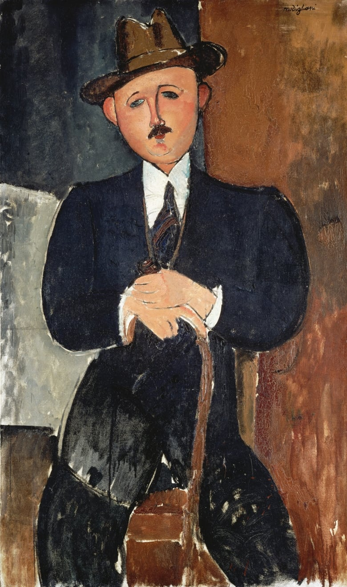
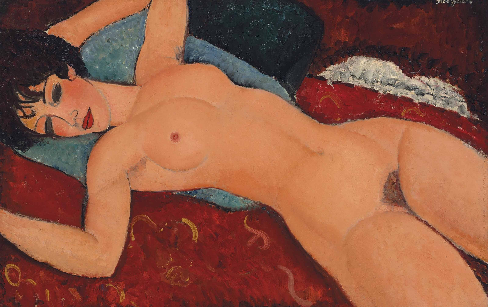
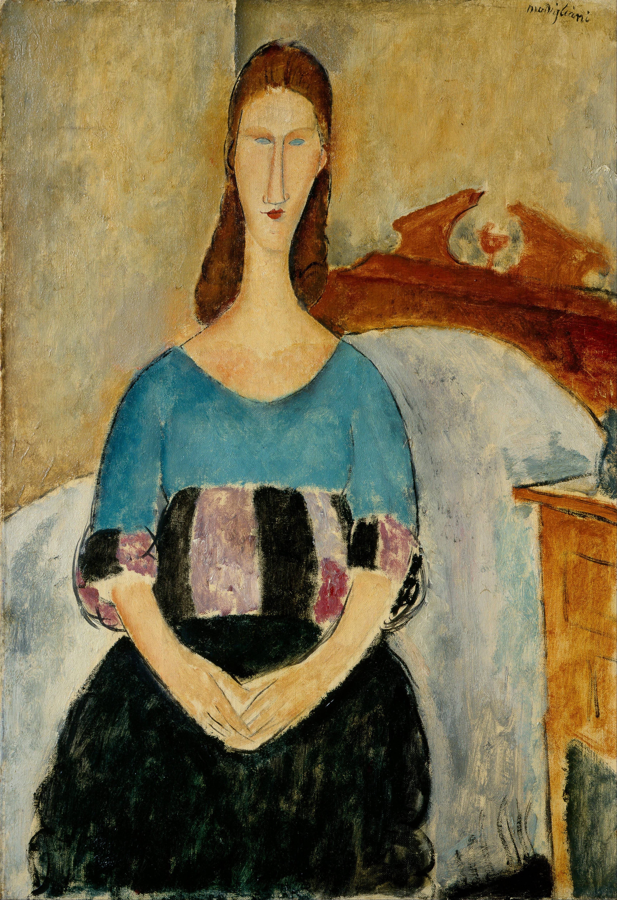

莫迪利安尼 Amedeo Modigliani – 持拐杖的男人 Seated Man with a Cane
文章目录
本周主题是拐杖。诺打球又受伤了，间隔两年他再次拄拐，纪念他的伤情，送别他的拐杖。
 图1. Seated Man with a Cane
莫迪的一生中，母亲对他性格的塑造产生巨大影响。 当莫迪还在母亲腹中时家境遭变，父亲从中产落魄到破产。政府在没收家庭财产时，怀着莫迪的母亲躺在床上，床上被架满了家具，因古老法律里规定不可搬离孕妇床上的物品，以此保住了几件家具。 受过良好教育的母亲一直在家教授莫迪知识，并带他游历意大利艺术名城，从那不勒斯到罗马，从佛罗伦萨到威尼斯。
虽生活贫寒，但莫迪在成长中充分体验到艺术的自由与魅力；这也许能解释为何他的作品既充满忧郁与哀伤，又饱含温暖与温柔。
莫迪青少年时期接触的是意大利古典艺术和文艺复兴艺术，1906年他前往巴黎，自由奔放的艺术气息，让他重新理解艺术；并与大批优秀的艺术家结识，雕塑家康斯坦丁、画家毕加索等等，指引他短暂却璀璨的艺术之路。
在1909年到1914年期间，莫迪专注雕刻技术，已知他的雕塑作品有26件。他雕刻的多是人物头像，作品线条简洁，却饱含倔强的讯息，仿佛给世人讲述非洲部落的原住民的古老故事（图2~图3）。
图2. Modigliani, Head of a Woman, limestone, 1910/1911, 65.2 x 19 x 24.8 cm, National Gallery of Art, Washington DC, USA
图3. Modigliani, Head, 1913, Kimbell Art Museum
图4. Modigliani, Little Girl in Blue, 1918, 58*37cm
图5. Modigliani, Max Jacob, 1916, 92.7 x 60.3 cm
图6. Amedeo Modigliani, Paul Guillaume – Novo Pilota, 1915, Musée de l’Orangerie, Paris
图7. Amedeo Modigliani, Alice, 1915, 78 x 39 cm, National Gallery of Denmark, Copenhagen, Denmark
如今莫迪的名声极盛，无论是雕塑还是画作，被全球收藏家疯狂追逐。 2010年雕塑《Tête de femme》（图8）以5千多万美元在巴黎的拍卖会完成交易[3]，交易价在当时仅次于Alberto Giacometti的一件代表作，如今仍是雕塑交易排行第四[4]。 2015年中国收藏家刘益谦以1.7亿美元买入他的画作《侧卧的裸女Nu couché》（图9）[5]，直至现在，仍排名全球最昂贵画作第十[6]。
图8. Modigliani, Tête de femme, 1910-1911, National Gallery of Art, Washington DC, USA
 图9. Modigliani, Nu couché, 1916-1917, 60.6 * 92.7cm, Private Collection by Liu Yiqian
现在谈到莫迪的作品，常被关注的是“裸女”系列，而我独钟情莫迪为他的两位缪斯创作的作品，这两位女神仿佛是莫迪花火般生命中的火花[8][9]。
第一位缪斯是英国女诗人Beatrice Hastings，她与莫迪结识时已是艺术圈里的名媛，她给予莫迪生活上的帮助。 在1914年到1916年的两年中，莫迪以Beatrice为模特创作多幅作品（图10~图11），但两位艺术家终因不同的艺术脾气而分开。
图10. Amedeo Modigliani, Portrait of Beatrice Hastings, 1915
图11. Modigliani, Madam Pompadour Portrait Of Beatrice Hastings,1915
莫迪简直堪称**“炫妻狂魔”**，他与珍妮的感情，不再是艺术浪子与情人的自由之爱，更是两颗心心相惜的灵魂间的爱。
图12. Modigliani, Portrait of Jeanne Hébuterne, 1919, 55 * 38cm, Private Collection_
图13. Modigliani, Portrait of Jeanne Hébuterne, 1918
图14. Modigliani, Jeanne Hébuterne (au chapeau), 1919, 92 * 54cm
图15. Modigliani, Portrait of Jeanne Hébuterne in a Light Hat, c.1918-19, 54x37.5cm, Private Collection
图16. Modigliani, Portrait of Jeanne Hébuterne
图17. Modigliani, Portrait of Jeanne Hébuterne
 图18. Modigliani, Portrait of Jeanne Hébuterne
图19. Modigliani, Portrait of Jeanne Hébuterne
图20. Modigliani, Jeanne Hébuterne (AU FOULARD), 1919, 92 * 54cm, Private Collection
参考： [1] 莫迪作品网站（私人），www.secretmodigliani.com/artists.html [2] 莫迪作品网站（官方），https://www.modigliani-foundation.org/sitemap.html [3] https://www.wsj.com/articles/SB10001424052748704324304575307202294422036 [4] https://en.wikipedia.org/wiki/List_of_most_expensive_sculptures [5] https://www.nytimes.com/2015/11/10/arts/with-170-4-million-sale-at-auction-modigliani-work-joins-rarefied-nine-figure-club.html?hp/ [6] https://en.wikipedia.org/wiki/List_of_most_expensive_paintings [7] https://news.artnet.com/art-world/nahmads-nazi-looted-modigliani-lawsuit-1141232 [8] http://www.barbarainwonderlart.com/2013/03/02/amedeo-modigliani-amori-vita/?lang=fr [9] http://www.barbarainwonderlart.com/2013/03/02/amedeo-modigliani-amori-vita/?lang=fr [10] http://modernartconsulting.ru/en/2013/03/jeanne-hebuterne/#